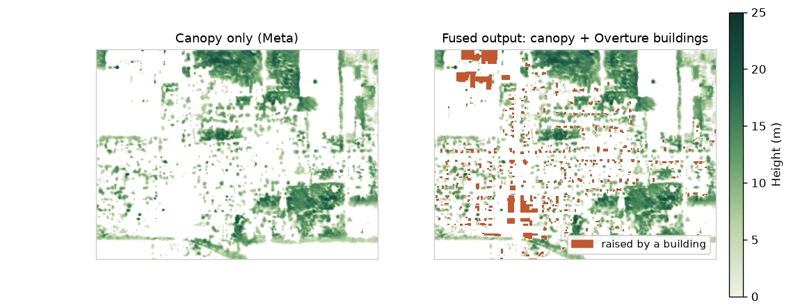

- RE
- The height fusion tool works on U.S. LiDAR-gap towns; an accuracy check comes next
The height fusion package uses only public data to combine Meta's canopy height map with Overture building heights. For any boundary it writes one surface-height GeoTIFF with pixels just under 1 m on the ground. I tested it on two Michigan towns that have no modern LiDAR, and each took 75 to 85 seconds. Its accuracy has not been measured yet. Before running it on the full gap list from memo 1, I plan to compare its output with 3DEP LiDAR in a few towns that do have coverage.
It produced a height layer for each test town in under 90 seconds
I chose Gobles city and Hartford city in Van Buren County, Michigan, because memo 1 shows both with 0% modern LiDAR in either source. The only LiDAR covering them was flown in December 2014. For a bounding box around Gobles, the tool found 500 Overture buildings and one canopy tile and wrote a 2,452 × 1,830 pixel grid. Heights have a median of 9 m and a maximum of 24 m. Run as a batch on the two town boundaries, it processed Gobles (468 buildings) in 74 seconds and Hartford (1,172 buildings) in 83 seconds.

In the U.S., most building heights come from Overture's own data
When a building has no height, the tool estimates one at 3 m per floor, or 4 m if the floor count is also missing. In Gobles only 35 of 500 buildings (7%) needed an estimate. In an earlier Hong Kong sample the figure was 390 of 438 (89%). Places with sparse height data will rely much more on these defaults, so the Global South runs will measure how often they are used.
Next, I plan to check accuracy against 3DEP LiDAR
No output has been compared with measured heights yet. The check has three steps:
- Pick three to five towns that have full LiDAR coverage from 2015 or later, of different sizes and in different regions.
- Run the tool there and build a reference surface height from the 3DEP point clouds.
- Report the error separately for buildings and for tree canopy, and the share of buildings that used an estimated height.
I will also run the tool for two Global South cities. There is no LiDAR to compare against, but the runs will show how many building heights have to be estimated.
Known limits
- Most of the run time goes to querying Overture, about 60 to 80 seconds per area.
- An area that spans canopy tiles in different coordinate systems fails and has to be split. Areas larger than a city should be split as well.
- The output is a surface height (canopy or building top), not a 3D model; it does not separate building parts or tree shapes.
Next steps
- Write the 3DEP comparison, run it in three to five towns with full coverage, and report the error figures in a follow-up memo.
- Run the tool for two Global South cities and report the share of estimated building heights.
- After the check, run the tool on the gap list from memo 1.
Appendix: how to run it
uv tool install git+https://github.com/DOGZzl1xy/TreeBuilding2Tiff # one area height-fusion --bbox -85.8889 42.3538 -85.8626 42.3683 --output gobles.tif # one GeoTIFF per feature, with layers for checking in QGIS height-fusion --boundary-geojson towns.geojson --each-feature --name-field GEOID \ --output outputs/towns --debug-dir outputs/towns_debug
Output can also go to S3 (--output s3://bucket/key.tif). In Python: from height_fusion_pipeline import fuse_heights.
Appendix: method
- Buildings come from Overture Maps (queried with DuckDB for the requested area). Heights use, in order, the recorded height, floors × 3 m, or 4 m.
- Canopy heights come from Meta's Global Canopy Height tiles, found through Meta's tile index. The output keeps the canopy grid and coordinate system (EPSG:3857, 1.2 m Web Mercator pixels, about 0.9 m on the ground in Michigan).
- Each pixel takes the taller of canopy and building by default (
--fusion-mode max). Pixels outside the boundary are set to nodata.